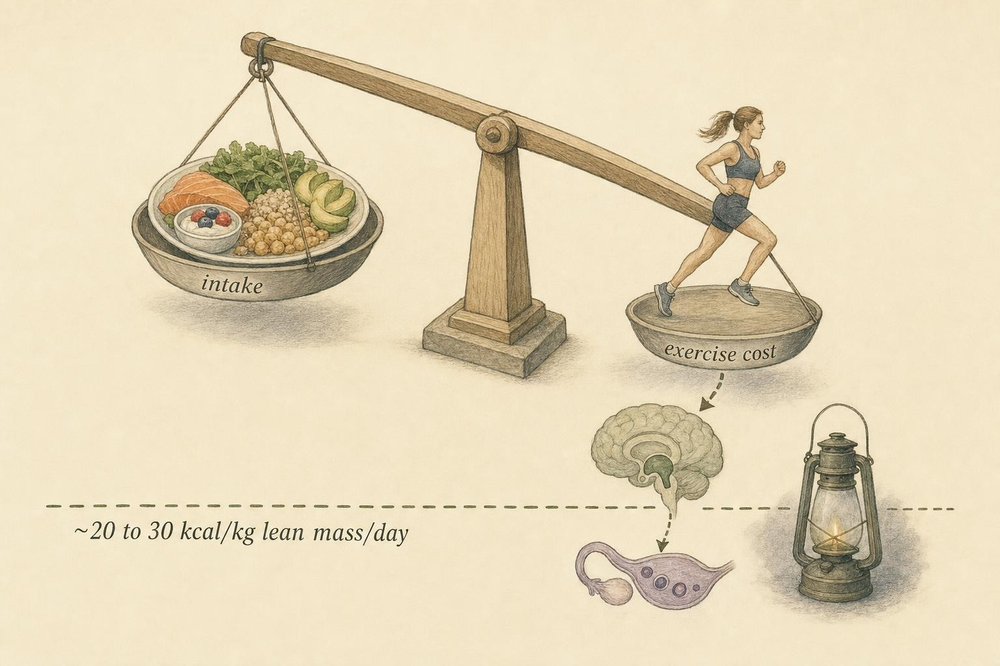

When the Cycle Goes Quiet
A missing period is not a diagnosis. It is a question, and the answer matters enormously.
Three people tell you their cycle has gone silent. The first started a progestin-only contraceptive method four months ago and has had no bleed since. The second is a physique competitor twelve weeks out from a show, eating in a deep deficit and training twice a day; her last period was in the spring. The third is thirty-four, eats plenty, trains moderately, is not on any hormonal method, and has simply stopped bleeding for the past four months with no explanation she can find.
Three quiet cycles. On the surface they look almost identical. Underneath, they could not mean more different things. One is expected and benign. One is the body powering down its reproductive machinery to conserve resources. One is a genuine unknown that needs a clinician. Confusing them is not a small error. It is the kind of error that delays care for someone who needs it, or manufactures alarm for someone who does not. This chapter is about learning to tell them apart at the level of recognition, and then knowing exactly where your job ends.
Amenorrhea is a symptom, not a disease
Start with vocabulary, because precision here prevents most of the trouble. Amenorrhea simply means the absence of menstruation. Clinicians split it into two forms. Primary amenorrhea is the failure to begin menstruating by the expected age in adolescence. Secondary amenorrhea is the stopping of periods in someone who previously had them. The 2025 update to the Female Athlete Triad Coalition consensus statement notes that in adolescents, sustained energy deficiency can itself delay the first period or cause primary amenorrhea, so the two categories are not as cleanly separated as the labels suggest (De Souza et al., 2025).
Here is the single most important idea in the chapter, and everything else hangs from it: amenorrhea is a symptom, not a diagnosis. It is the smoke, not the fire. A clinical review in American Family Physician frames the menstrual pattern as an indicator of overall health, a vital sign that reflects the state of the whole system rather than a disease in its own right (Klein et al., 2019). When the cycle goes quiet, the correct first response is not "what is the treatment" but "what is this a sign of." That reframing, from answer to question, is the entire posture this chapter asks you to adopt.
Three categories that look alike and mean different things
Sort the causes of a quiet cycle into three broad buckets. You are not diagnosing which bucket a real person belongs in; you are learning that the buckets exist and that they are not interchangeable.
The first is a medically induced change. This is the absent bleed from the progestin-based contraceptive methods you met in the previous chapter. The hormonal input is deliberately altering the endometrial lining so that there is little or nothing to shed. The reproductive axis may be doing exactly what the medication intends. This is expected, it is documented, and on its own it is benign. It is the one category where a quiet cycle is not a warning.
The second is a functional or hypothalamic pattern. Here the axis has not been switched off by a drug; it has quietly powered itself down in response to a signal that resources are scarce. This is the pattern that sits squarely in the middle of everything this course cares about, because it lives at the intersection of training load, nutrition, and the hypothalamic-pituitary-ovarian axis. We will spend most of the chapter here.
The third is a pathological cause. This is the quiet cycle that reflects underlying disease: a pituitary tumor, a thyroid disorder, primary ovarian insufficiency, polycystic ovary syndrome, an outflow-tract problem, or another organic condition. This category is precisely why you do not diagnose. Some of its members are serious, some are treatable only if caught, and none of them can be ruled in or out by looking at training logs and food diaries.
The functional or hypothalamic pattern, up close
Recall the machinery from earlier in the course. The hypothalamus releases gonadotropin-releasing hormone in pulses. Those pulses drive the pituitary to release the two gonadotropins, luteinizing hormone and follicle-stimulating hormone. Those in turn drive the ovary to grow a follicle, produce estradiol, ovulate, and produce progesterone. The whole cadence depends on the pulse generator in the hypothalamus keeping time.
Functional hypothalamic amenorrhea is what happens when that pulse generator slows down. The pulses become sparse and irregular, luteinizing hormone secretion loses its rhythm, the gonadotropins fall, estradiol drops, and the cycle fades to silence. Crucially, nothing is broken. There is no tumor, no failed ovary, no structural fault. The system is intact and is choosing, in effect, to spend less on reproduction because it has read the environment as one of scarcity or threat. A peer-reviewed review describes functional hypothalamic amenorrhea as a reversible disorder driven by suppression of gonadotropin-releasing hormone pulsatility, arising from low energy availability, psychological stress, disordered eating, excessive exercise, or some combination of these (Morrison et al., 2021).
How common is this pattern? More common than most people assume. That same review identifies functional hypothalamic amenorrhea as the most common cause of secondary amenorrhea in women of reproductive age (Morrison et al., 2021). A Mayo Clinic Proceedings review puts it at roughly one-third of all secondary amenorrhea cases and, importantly, notes that it is frequently under-recognized and under-treated (Sowmya et al., 2023). That combination, common and overlooked, is exactly why a course like this asks you to learn to notice it.
Energy availability, not body fat, is the lever
For decades the folk model held that women stop menstruating when they get "too lean," as if body fat percentage were the switch. The evidence dismantled that story. The pivotal work here belongs to Anne Loucks, whose research established that reproductive function is regulated by energy availability, defined as dietary energy intake minus the energy expended in exercise, expressed relative to lean body mass. When energy availability falls below a threshold of roughly twenty to thirty kilocalories per kilogram of lean body mass per day, the disruption of luteinizing hormone pulsatility appears. Body fatness, per se, is not the regulator (Loucks, 2003).
Two consequences of that finding are worth holding onto. First, exercise itself has no suppressive effect on the menstrual cycle beyond its energy cost. The problem is not that training is inherently harmful to the cycle; the problem is the arithmetic of intake minus expenditure. You can create a deficit large enough to matter through eating too little, training too much, or both, and the axis responds to the net figure, not to the training in isolation (Loucks, 2003). Second, because the driver is a signal about resources rather than a structural injury, the pattern is generally reversible when energy availability is restored. That is a hopeful fact, but it is a clinical fact, not a license for you to prescribe a fix.

The regulator is the net energy left over, not the number on a body-fat caliper." data-image-idx="1" style="display:block;max-width:100%;max-height:75vh;height:auto;width:auto;margin:0 auto;cursor:pointer;">Weight-cutting and physique sport
Certain contexts concentrate this risk. Sports and pursuits that reward leanness, restrict intake, or demand large training volumes push energy availability down almost by design. Physique sport is a clear example. A cross-sectional study of one hundred and four female physique athletes found that 58.65 percent reported menstrual cycle disorders, defined as amenorrhea of three or more consecutive months, and 46.15 percent screened as at risk of low energy availability on the Low Energy Availability in Females Questionnaire. The women reporting menstrual disturbance were younger and trained more per week, and menstrual changes tracked with increased exercise intensity, frequency, and duration (Witkoś et al., 2024). When more than half of a population reports a silent or disrupted cycle, the pattern is not an anomaly. It is close to an occupational feature.
This is the domain where your recognition skills matter most, because it is where you are most likely to encounter someone in the functional pattern, and where the surrounding culture is most likely to treat a missing period as a badge of dedication rather than a signal worth acting on. Learning to see it plainly, without either panic or dismissal, is the skill.
Widening the lens: Relative Energy Deficiency in Sport
Menstrual disruption is rarely a solitary event. The older framework called this cluster the Female Athlete Triad, linking energy status, reproductive function, and bone health. The 2025 update to that consensus statement retains the three interrelated components, adds the idea of metabolic compensation to the energy-status continuum, and broadens the reproductive-function continuum to include the full range of ovarian steroid hormone exposure and functional hypothalamic oligo-amenorrhea, meaning infrequent as well as absent cycles (De Souza et al., 2025).
The International Olympic Committee took the concept further under the name Relative Energy Deficiency in Sport. The 2023 consensus statement expands the model beyond women to both sexes and across all levels of participation, and frames low energy availability as a spectrum running from adaptable, where the body adjusts without lasting harm, to problematic, where health and function suffer. Menstrual dysfunction sits as a central consequence within that model, and the statement provides structured clinical assessment tools for risk stratification (Mountjoy et al., 2023). The reason to know this framework is not so you can score anyone on it. It is so you understand that a quiet cycle in this context is often the visible tip of a larger disturbance touching bone, cardiovascular health, and more, which is one more reason it belongs with a clinician rather than with you.
Reproductive disruption in exercising women is driven by energy availability falling below a threshold, and not by body fatness per se. Exercise has no suppressive effect on menstrual function beyond its energy cost.
After Loucks, 2003
Recognize and refer: where your job ends
This is the heart of the chapter, and it is worth stating flatly. Your job is to recognize when a quiet cycle is not the expected result of contraception and may signal something worth professional evaluation. The limit of your job is exactly there. Evaluation belongs to a clinician. You do not diagnose, you do not treat, and you do not position yourself to manage the situation.
The reason this boundary is non-negotiable is written into the definition of the functional pattern itself. Every serious clinical source treats functional hypothalamic amenorrhea as a diagnosis of exclusion. The Endocrine Society clinical practice guideline is explicit: the diagnosis can only be made after anatomic and organic pathology have been ruled out, and it sets specific thresholds, a cycle interval persistently longer than forty-five days or amenorrhea of three months or more, as the point at which evaluation is warranted (Gordon et al., 2017). "Diagnosis of exclusion" means you cannot arrive at it by recognizing the functional pattern. You arrive at it only by first excluding the pathological causes, and excluding those requires examination, laboratory work, and imaging that are entirely outside your scope. When you look at a physique competitor in a deep deficit and think "this looks functional," you may well be right, and you are still not entitled to conclude it, because the tumor and the thyroid disorder and the ovarian insufficiency can wear the same face.
So the correct action, whenever a quiet cycle is not a clearly expected induced change, is the same regardless of how confident your pattern-recognition feels: encourage evaluation by a qualified clinician. Not because you failed to figure it out, but because figuring it out was never your task, and because the guideline authors, the people who wrote the diagnostic criteria, built exclusion into the definition on purpose.
Why the boundary protects the person, not just you
It is tempting to read "recognize and refer" as professional self-protection, a way to stay out of trouble. It is more than that. Functional hypothalamic amenorrhea carries real downstream consequences: hypoestrogenism, bone loss, and elevated cardiovascular risk, with additional effects on cognition and mental health described in the literature (Morrison et al., 2021; Sowmya et al., 2023). The guideline recommends a multidisciplinary approach to treatment precisely because the condition reaches into several body systems at once (Gordon et al., 2017). Someone in this pattern needs coordinated professional care, not a well-meaning adjustment to their diet or training from a person without the training to manage the whole picture. Referring is not passing the buck. It is routing the person to the level of care the condition actually requires.
A word on the evidence
Honesty about the science is part of the job. The energy-availability threshold from Loucks is robust and foundational, and the recognition of functional hypothalamic amenorrhea as common and under-treated is well supported. But a great deal of the popular advice built around the menstrual cycle, the training periodization schemes keyed to cycle phases, the phase-specific nutrition protocols, rests on weak, inconsistent, or contradictory data. The frameworks in this chapter, the Triad and Relative Energy Deficiency in Sport, are consensus statements, which means they represent expert synthesis and are revised as evidence accumulates, not settled physical law. Hold the strong findings firmly and the speculative ones loosely, and remember that clinical judgment and the lived expertise of the person in front of the science both matter alongside the distilled research.
Key Takeaways
- A quiet cycle is a symptom and a question, never a diagnosis in itself. The menstrual pattern functions as a vital sign of overall health.
- Sort quiet cycles into three buckets that look alike but mean different things: an expected medically induced change, a functional or hypothalamic pattern, and a possible pathological cause.
- Functional hypothalamic amenorrhea is the most common cause of secondary amenorrhea, is often under-recognized, and reflects suppressed gonadotropin-releasing hormone pulsatility, not a broken system.
- Energy availability, roughly intake minus exercise energy expenditure per kilogram of lean mass, is the regulator. Below about twenty to thirty kilocalories per kilogram of lean mass per day, the cycle is disrupted. Body fatness is not the switch, and exercise does not suppress the cycle beyond its energy cost.
- Physique sport and weight-cutting contexts concentrate this risk; in one physique-athlete sample, over half reported menstrual disorders.
- Functional hypothalamic amenorrhea is a diagnosis of exclusion. You can recognize the pattern, but you cannot conclude it, because the pathological causes wear the same face and can only be ruled out clinically.
- Recognize and refer. For any quiet cycle that is not a clearly expected induced change, encourage clinician evaluation. Do not diagnose, do not treat, do not manage.
- Grade the evidence honestly: the energy-availability threshold is strong, but much cycle-based training and nutrition advice rests on weak or contradictory data.
We have named energy availability as the lever behind the functional pattern and left it mostly as a single number. Next, we open that number up. The following chapter is a deep dive into energy availability itself, how it is conceived, why the threshold behaves the way it does, and what the spectrum from adaptable to problematic really looks like in practice, so that the pattern you learned to recognize here gains the depth to make your recognition sharper and your referral more grounded.
References
De Souza, M. J., Koltun, K. J., Williams, N. I., Nattiv, A., Ackerman, K. E., Mallinson, R. J., Joy, E., Misra, M., Gibbs, J. C., Southmayd, E. A., & Kraus, E. (2025). 2025 update to the Female Athlete Triad Coalition consensus statement part 1: State of the science and introduction of a new adolescent model. Sports Medicine. https://link.springer.com/article/10.1007/s40279-025-02333-z
Gordon, C. M., Ackerman, K. E., Berga, S. L., Kaplan, J. R., Mastorakos, G., Misra, M., Murad, M. H., Santoro, N. F., & Warren, M. P. (2017). Functional hypothalamic amenorrhea: An Endocrine Society clinical practice guideline. The Journal of Clinical Endocrinology & Metabolism, 102(5), 1413-1439. https://doi.org/10.1210/jc.2017-00131
Klein, D. A., Paradise, S. L., & Reeder, R. M. (2019). Amenorrhea: A systematic approach to diagnosis and management. American Family Physician, 100(1), 39-48. https://pubmed.ncbi.nlm.nih.gov/31259490/
Loucks, A. B. (2003). Energy availability, not body fatness, regulates reproductive function in women. Exercise and Sport Sciences Reviews, 31(3), 144-148. https://doi.org/10.1097/00003677-200307000-00008
Morrison, A. E., Fleming, S., & Levy, M. J. (2021). A review of the pathophysiology of functional hypothalamic amenorrhoea in women subject to psychological stress, disordered eating, excessive exercise or a combination of these factors. Clinical Endocrinology, 95(2), 229-238. https://doi.org/10.1111/cen.14399
Mountjoy, M., Ackerman, K. E., Bailey, D. M., Burke, L. M., Constantini, N., Hackney, A. C., Heikura, I. A., Melin, A., Pensgaard, A. M., Stellingwerff, T., Sundgot-Borgen, J. K., Torstveit, M. K., Jacobsen, A. U., Verhagen, E., Budgett, R., Engebretsen, L., & Erdener, U. (2023). 2023 International Olympic Committee's (IOC) consensus statement on Relative Energy Deficiency in Sport (REDs). British Journal of Sports Medicine, 57(17), 1073-1097. https://doi.org/10.1136/bjsports-2023-106994
Sowmya, S., Muthu, S., & others. (2023). Functional hypothalamic amenorrhea: Recognition and management of a challenging diagnosis. Mayo Clinic Proceedings. https://www.mayoclinicproceedings.org/article/S0025-6196(23)00282-3/fulltext
Witkoś, J., Błażejewski, G., & Gierach, M. (2024). Menstrual cycle disorders as an early symptom of energy deficiency among female physique athletes assessed using the Low Energy Availability in Females Questionnaire (LEAF-Q). PLoS ONE, 19(5), e0303703. https://doi.org/10.1371/journal.pone.0303703